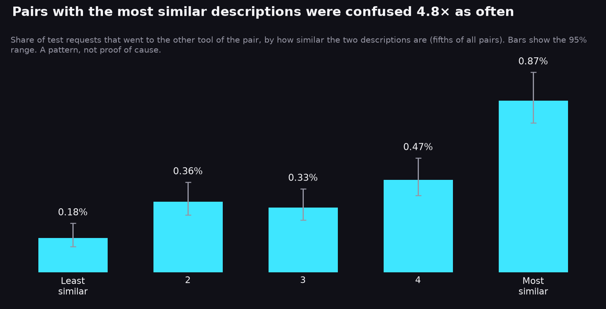
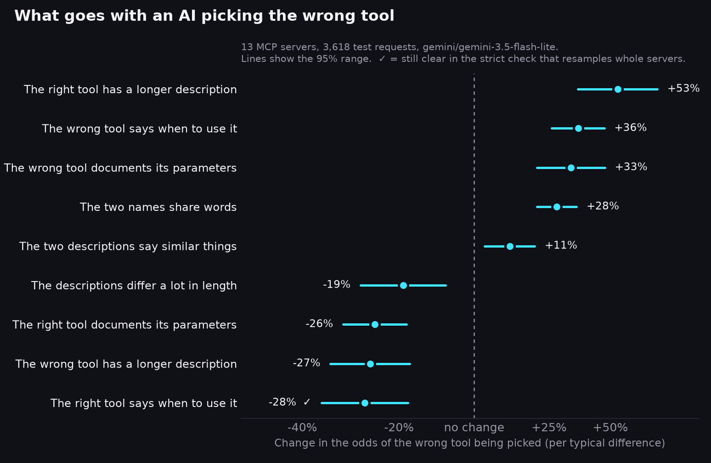

Your AI assistant is picking the wrong tool, and nothing tells you
AI assistants choose tools by reading one-line descriptions. I built an open-source tool to measure how often they mix them up. The most surprising lesson: when an AI rewrites a confusing description to “fix” it, the rewrite often makes things worse.
Update, 29 October: the benchmark has finished. Jump to the first results.
A failure that makes no noise
Modern AI assistants don’t just chat. They call tools: search your docs, read a file, open a ticket, send an invoice. More and more of those tools come through MCP, the Model Context Protocol, which lets you plug a “server” full of tools into Claude, Cursor or any other client.
Here is the part that is easy to miss. When you ask for something, the model decides which tool to call by reading a short description of each one. That’s it. Picture a server with search_docs and search_issues, both described simply as “Search for information.” That is a deliberately bad example from mispick’s own test suite, but real servers come closer to it than you would think. The model has to guess from those few words which one you meant.
When it guesses wrong, nothing crashes. The wrong tool runs, returns something plausible, and the assistant carries on. You get a worse answer and never learn why. Install a few servers side by side and it gets worse: two servers that both ship a search tool are now competing for the same requests.
Measure it, don’t lint it
There are good linters for MCP tool definitions. They check descriptions against rules: is it too short, is a parameter undocumented, is the name in the right case. Run one. But a description can pass every rule and still be indistinguishable from the tool next to it. A rule can only predict confusion. I wanted to measure it.
So I built mispick. It works in four steps:
- Read the tool list. It sends only
tools/listand never calls a tool, so it is safe to point at a server that deletes things. - Write test requests. For each tool it generates realistic requests a user might type, including “hard negatives”: requests written to sound as close as possible to the neighbouring tool.
- Ask a real model. It shows the model the real tool definitions, exactly as a client would, and records which tool it picks, several times per request.
- Count. The result is a confusion matrix, a table of which tools get chosen when another was meant, plus per-tool precision and recall and a 0–100 score.
uvx mispick run --cmd "python -m my_server"It runs free on a local model through Ollama, and there is a GitHub Action that posts the matrix on every pull request. Building it taught me more than I expected. Here are the five lessons that stuck.
1. AI-written “fixes” often make it worse
The obvious next step after finding a confused pair is to ask a model to rewrite the two descriptions so they are easier to tell apart. mispick does that, with one rule: every rewrite is re-tested on the same requests, and kept only if a paired statistical test (McNemar’s) says it helped.
That rule turned out to be the most important feature. In my runs on a small local model, two of three proposed rewrites made tool selection measurably worse. One took a tool from 78% to 58% accuracy. It broke 14 trials and fixed none, and the result held up when I re-ran it with three times the data. The model’s explanation for the rewrite read perfectly sensibly.
I’m not alone in this. Hasan et al. rewrote tool descriptions with an LLM across 231 tasks: success rose by a median of 5.85 points, but regressed in 16.67% of cases (arXiv 2602.14878). An untested rewrite is roughly a one-in-six bet on making things worse.
A rewrite you didn’t measure is a guess. A plausible explanation is not evidence.
2. A “wrong” pick can be a sensible one
Running a pilot on the official MCP memory server, I asked the model “Can you remove the old meeting notes from the Project Alpha entity in the graph?” It called search_nodes, not delete_observations. Was that confusion? Not really: it was looking the entity up before changing it, which is what a careful person would do.
mispick scores the first tool a model calls, so this counts as a miss. That is a real limitation, and I now state it everywhere a score appears. The same pilot exposed a bug in my own test requests. Early ones said things like “insert these nodes into the graph” without saying which nodes, and a model that sensibly looks before it writes was being punished for my vagueness. The generator now has to spell out concrete names and values.
3. Your model may never see half the tools
This one nearly made it into a published result. Local models have a limited context window, and Ollama divides it between parallel requests. Send a large tool list into a small window and it is silently truncated: in one case I sent about 24,000 tokens of tool definitions and the server reported processing about 2,050. The model replied that it had no tools, and every trial would have been recorded as “chose nothing”.
That would have published a 0% score and blamed the server’s descriptions for my configuration. mispick now compares the prompt size the API reports against its own estimate, and refuses to score when they don’t match. Failing loudly beats a number that looks real.
4. For routing, thinking is pure cost
Most tool-capable models small enough for a laptop are “reasoning” models that think before they answer. For “pick one tool”, that thinking bought nothing: on qwen3.5:4b, one call took 89 seconds and 1,078 tokens with thinking on, against 2.2 seconds and 20 tokens with it off, for the same answer. mispick turns thinking off by default.
5. Small samples deserve honest error bars
With a handful of requests per tool, “75% accurate” can easily mean anything from 40% to 95%. Every rate mispick reports carries a Wilson 95% interval, and comparisons use paired tests, because the before and after runs use the same requests. Reading the interval instead of the point estimate changed several of my own conclusions.
The benchmark, and a study
Next, I ran mispick over real servers from the official MCP registry on a free API tier, a few hundred calls a day for 13 days. On top of it I set up a small research study with three questions:
- What makes two tools easy to confuse: similar descriptions, overlapping names, or missing “use this when…” guidance?
- Does a cheap model’s confusion predict a stronger model’s?
- Do generated test requests give the same results as hand-written ones?
I wrote down the analysis plan and committed it before seeing any results, including what would count as “no effect”, so the questions couldn’t quietly bend to fit the answers.
Update: the first results
The first question has an answer. These numbers come from 13 servers, 201 tools and 3,618 test requests, all on Gemini 3.5 Flash-Lite.

Mix-ups are rare, but not random. Pairs of tools with the most similar descriptions were confused 4.8 times as often as the least similar pairs. That is a pattern, not proof that similarity causes it.

What I can say, from the strongest to the weakest evidence:
- Say when to use your tool. When a tool’s description says when it should be used, requests meant for it were taken by other tools less often: 28% lower odds. This is the one effect that survived every check, including the strictest one.
- Overlapping names go with more mix-ups (+28% odds), and that direction held in every check. But in the strictest check its range also included “no effect”.
- Similar descriptions mattered less than I expected. The effect is small (+11%), and it even reverses when the largest server is left out.
The honest summary: with only 13 servers, a few big servers carry much of the result, so most of these effects are fragile. By the rule I wrote down in advance, the answer to the first question is “yes, there is an effect”. But the checks I also wrote down in advance say not to lean on it too hard. I’m reporting both, because a study that only shows its best number isn’t worth much.
One more finding came for free. One server’s tool list contains a broken schema, a reference to a definition that doesn’t exist, and Gemini rejected every single request because of it. Any app using that server with Gemini would fail every time. A simple schema check would have caught that one, and I’ll report it to the maintainers.
Still to come: whether a stronger model gets confused by the same pairs, and whether hand-written test requests agree with generated ones. The full tables, intervals and checks are in the write-up.
Try it
uvx mispick run --cmd "python -m my_server" # a local server
uvx mispick run --snapshot tools.json # a captured tool list
uvx mispick run --config claude_desktop_config.json # every server at onceCode: github.com/msc35/mispick (MIT). GitHub Action: mispick on the Marketplace. If you build MCP servers, I’d love to hear whether the confusions it finds match what you see.